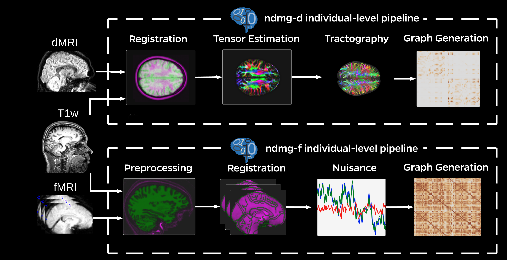

class: left, name:opening ## Data Intensive Brain Science Joshua T. Vogelstein <br> Kavli Neuroscience Discovery Institute <!-- {[bme](http://www.bme.jhu.edu/),[icm](http://icm.jhu.edu/),[cis](http://cis.jhu.edu/),[idies](http://idies.jhu.edu/),kavli,[cs](http://engineering.jhu.edu/computer-science/), [ams](http://engineering.jhu.edu/ams/), [neuro](http://neuroscience.jhu.edu/)} | [jhu](https://www.jhu.edu/) --> <br> questions: [jovo@jhu.edu](mailto:jovo at jhu dot edu) <br> slides: <http://brainx.io/BSI-google> <br> funding: DARPA I2O {GRAPHS, XDATA, D3M, L2M} .center[ <img src="images/biomedical-engineering.small.horizontal.white.png" STYLE="HEIGHT:100px;"/> ] --- class: center, middle # Motivation --- class: center, middle <img src="images/GeneralMHFacts.png" style="width: 100%;"/> <footer>source: NAMI</footer> --- class: center ## The Human Condition <iframe width="800" height="500" frameborder="0" scrolling="no" src="//plot.ly/~jovo/17.embed"></iframe> --- class: center ## The Grazing Goat Starves <img src="images/grazing-goat.png" style="width: 60%;"/> --- class: center ## Our Social Cage <img src="images/PlanetOTApes_099Pyxurz.jpg" style="width: 60%;"/> --- # Goal Give each individual the tools she needs to move herself in the desired direction by the desired amount in our high-dimensional experience --- class: center, middle # Challenges --- class: center, middle <img src="images/APA1.png" style="width: 100%;"/> <img src="images/APA2.png" style="width: 100%;"/> --- class: center, middle <img src="images/PNAS_israeli_judges1.png" style="width: 100%;"/> <img src="images/PNAS_israeli_judges2.jpg" style="width: 100%;"/> --- class: center, middle <img src="images/nuisance1.png" style="width: 100%;"/> <img src="images/nuisance2.png" style="width: 100%;"/> --- class: center, middle # Enter NeuroData <img src="images/neurodata_venn.png" style="width: 60%;"/> --- class: top, left ## Our Idea Multiple measurements from same subject should be more similar to one another than they are to any measurement of any other subject -- $P[|| x\_{ij} - x\_{ij'}|| < || x\_{ij} - x\_{i'j''}||]$ -- <br> Without that, how can we trust biomarkers? -- (we prove a bunch of stuff about our estimator) --- class: top, left ## Our model <img src="images/connectome-coding-schematic.png" style="width: 100%;"/> --- class: top, left ## Our Pipeline  --- class: center, middle <iframe width="760" height="515" src="https://www.youtube.com/embed/TxlV50P6NEI?start=99" frameborder="0" allow="autoplay; encrypted-media" allowfullscreen></iframe> --- class: top, left ## Our Result Within a study, subjects are "discriminable" .pull-left[ - 25+ studies - 6000+ scans - largest "meganalysis" - largest open repo ] .pull-right[ <img src="images/discr.jpeg" style="height: 100%;"/> ] -- (we tried 200+ pipelines ⇒ 1M+ compute hours) --- class: top, left ### But... - Across studies, populations are significantly different - Conditioning on Phenotype Fails <img src="images/conditional.png" style="width: 100%;"/> -- <span style="font-size:200%;">☹</span> --- class: top, left ### Our Proposed Solutions - better pipelines - better data (eg, quantitative MRI) - deep phenotyping - data acquisition harmonization --- class: top, left ## Acknowledgements .pull-left[ Collaborations: - Miller (BME) - Priebe (AMS) - Burns (CS) - Szalay (Physics) - Caffo (BioStats) - Huganir (Neuroscience) - Applied Physics Lab - Milham (Child Mind Institute) ] .pull-left[ Industry: - Google - Amazon - [gigantum](http://gigantum.com/) - [d8alab](https://d8alab.com/) Loves: <span style="font-size:200%; color:red;">♥, 🦁, 👪, 🌎, 🌌</span> ] <img src="images/funding/nsf_fpo.png" STYLE="position:absolute; TOP:550px; LEFT:10px; HEIGHT:100px;"/> <img src="http://brainx.io/images/funding/nih_fpo.png" STYLE="position:absolute; TOP:550px; LEFT:120px; HEIGHT:100px;"/> <img src="http://brainx.io/images/funding/darpa_fpo.png" STYLE="position:absolute; TOP:550px; LEFT:230px; HEIGHT:100px;"/> <img src="http://brainx.io/images/funding/iarpa_fpo.jpg" STYLE="position:absolute; TOP:550px; LEFT:430px; HEIGHT:100px;"/> <img src="http://brainx.io/images/funding/kavli_fpo.png" STYLE="position:absolute; TOP:550px; LEFT:550px; HEIGHT:100px;"/> <img src="http://brainx.io/images/funding/kndi_fpo.png" STYLE="position:absolute; TOP:550px; LEFT:650px; HEIGHT:100px;"/> --- ### Questions? - dimensionality reduction: [LOL](https://github.com/neurodata/LOL) - classification & regression: [RerF](https://github.com/neurodata/R-RerF/) - hypothesis testing: [MGC](https://github.com/neurodata/mgc) - clustering: [knor](https://github.com/neurodata/knorr) - email: [jovo@jhu.edu](mailto:jovo@jhu.edu) - lab: [neurodata](http://neurodata.io/) - startup: [gigantum](http://gigantum.com/) <img src="images/liono.JPG" STYLE="position:absolute; TOP:130px; LEFT:480px; HEIGHT:500px;"/> <!-- background-image: url("images/OCPaper.png") background-size: contain; --> <!-- <img src="images/OCPaper.png" style="width: 100%;"/> -->